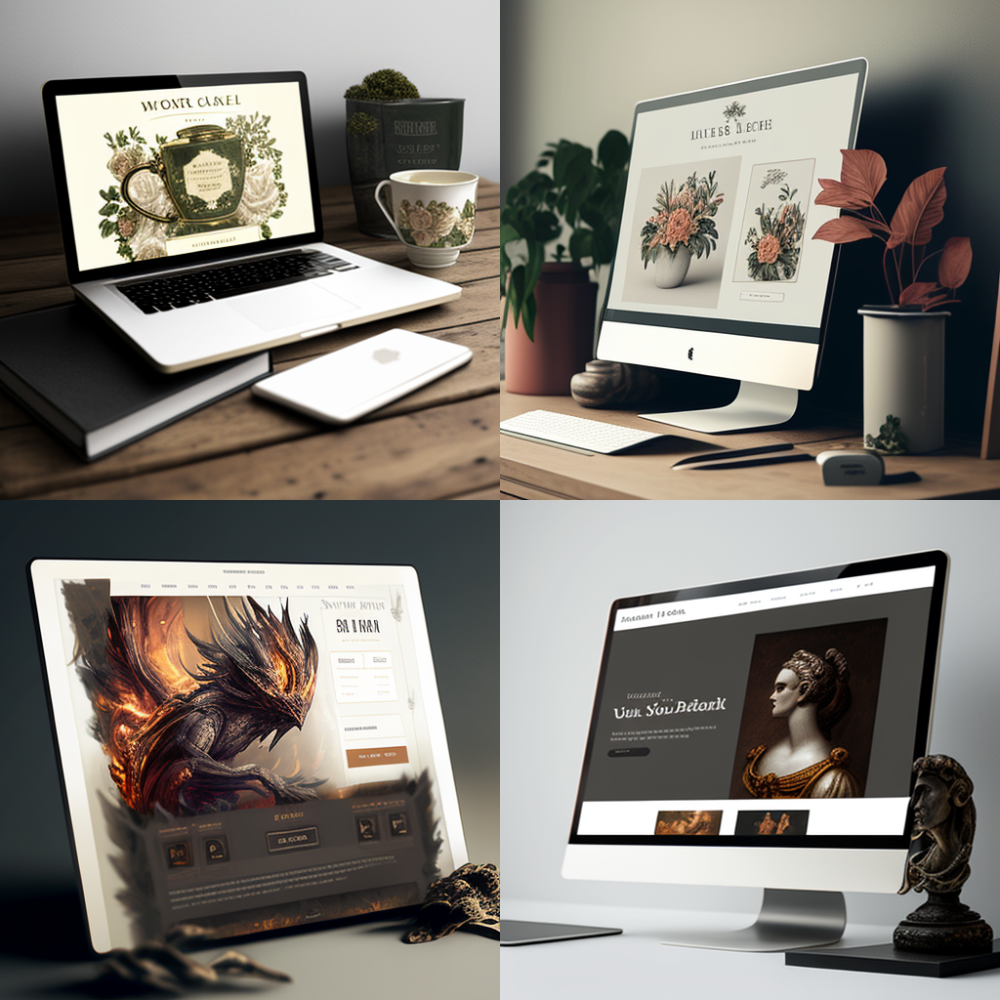

Expert Frontend Full Stack en France : Création d'expériences utilisateur exceptionnelles
En tant que développeur web frontend, je suis expert dans les technologies essentielles telles que HTML, CSS et JavaScript, qui me permettent de créer des interfaces utilisateur dynamiques et interactives.
J'ai également une maîtrise avancée de React, qui me permet de développer des applications web modernes et performantes. Je suis compétent dans l'utilisation de frameworks comme Tailwind et Sass, ce qui me permet de créer des designs responsives et attrayants. Mon expérience en backend avec Node.js me permet de construire des interfaces avec un code propre en suivant les meilleures pratiques, offrant ainsi à mes utilisateurs une expérience agréable.
Boostez votre présence en ligne avec nos service
pour un accompagnement sur mesure.
Création de site web.
Confiez la création de votre site web sur mesure à un développeur web
freelance passionné. Avec une attention méticuleuse aux détails, je mets
en œuvre vos idées et vos objectifs pour concevoir un site web unique et
percutant. Que vous souhaitiez un site vitrine élégant, un site
e-commerce puissant ou une plateforme complexe, je possède l'expertise
nécessaire pour réaliser votre vision.

Refonte de site existant.
Donnez une nouvelle vie à votre site web existant grâce aux services de
refonte proposés par un développeur web freelance. Après une analyse
approfondie de votre site, j'identifie les lacunes et les opportunités
d'amélioration, puis je le transforme en une version améliorée et
modernisée. Que ce soit pour une refonte visuelle, une amélioration des
fonctionnalités ou une optimisation des performances, je vous accompagne
pour renouveler votre présence en ligne de manière efficace et
convaincante.
UI/UX.
Profitez d'un design d'interface utilisateur (UI) attrayant et d'une
expérience utilisateur (UX) optimale grâce aux services d'un développeur
web freelance expérimenté. Je prends en compte chaque élément de votre
site web pour offrir une expérience utilisateur fluide et intuitive.
Grâce à une combinaison de recherche, de conception centrée sur
l'utilisateur et d'une approche esthétique, je crée des interfaces qui
guident les utilisateurs et améliorent leur engagement. Mon objectif est
de vous fournir un design moderne et fonctionnel qui renforce la
convivialité et la satisfaction de vos visiteurs.
SEO (Search Engine Optimisation).
Optimisez la visibilité de votre site web grâce aux compétences en
référencement naturel (SEO) d'un développeur web freelance. J'optimise
votre site pour les mots-clés pertinents, améliore la structure et la
qualité du contenu, et met en place des stratégies de référencement
avancées. Grâce à des techniques éprouvées, je vise à améliorer le
classement de votre site dans les résultats de recherche, à attirer un
trafic qualifié et à renforcer votre présence en ligne.